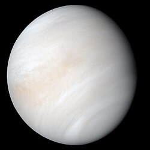
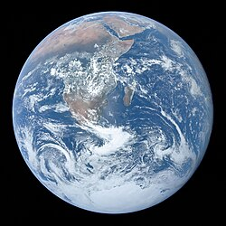
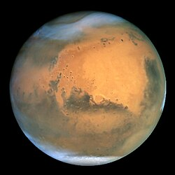
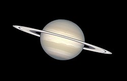
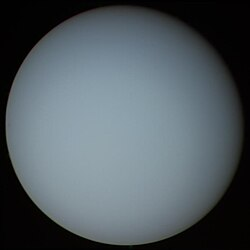
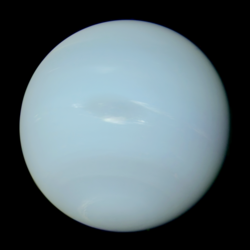

Планети Сонячної системи
У Сонячній системі налічується 8 планет.
Вони діляться на дві групи:
- Планети земної групи(внутрішні планети)
- Планети-гіганти(зовнішні планети)
Три цікавих факти:
- Плутон раніше вважався 9-ю планетою, але зараз він — планета-карлик
- На Венері один день довший за один рік
- Юпітер настільки великий, що в ньому помістилося б більше 1300 Земель
Фото планет:

Меркурій

Венера

Земля

Марс

Юпітер

Сатурн

Уран

Нептун